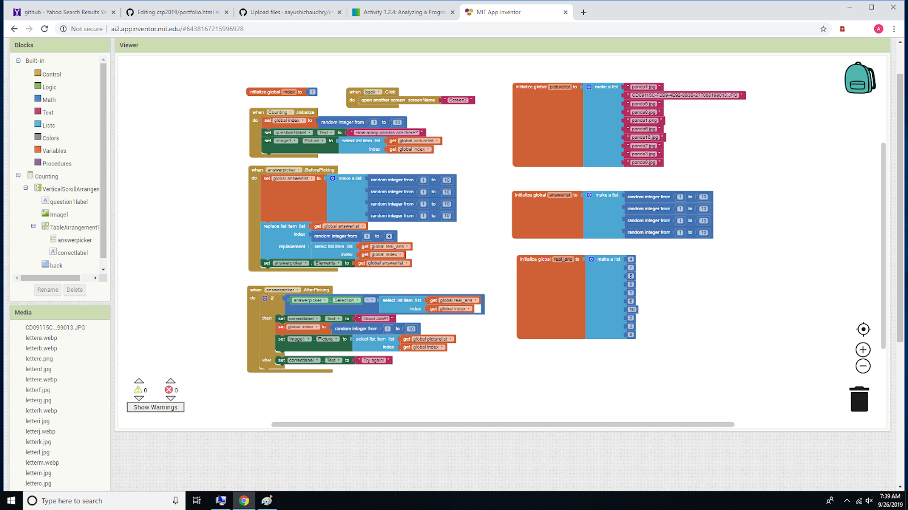

In this game, you must try to eat the apple and avoid the fly, using the arrow keys. Eating the apple gains points, hitting the fly loses points. To win, get 200 points.

This game is a game meant for younger players to help preschoolers learn their alphabet and numbers. The game contains levels where the player answers questions such as answering how many pandas are in a picture or what letter a word starts with. Rated E.
This game is a life simulation game, where you make decisions throughout your life, resulting in riches, poverty or death.
This game is a quiz on State Capitals and World Capitals. The quiz is challenging, so heed my warnings.